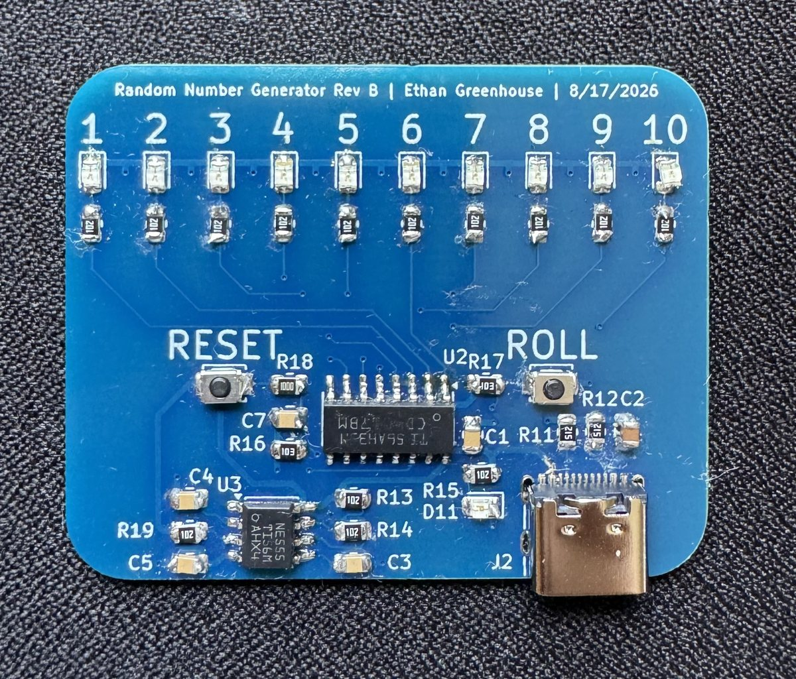

Random Number Generator PCB
August 2026 · Rev B

Overview
Press ROLL and ten LEDs blur together. Release it and one stays lit. The board is a digital die built from two pieces of 1970s logic with no microcontroller involved.
It was also the first board I assembled by hand, so it was specified around parts I could place with tweezers and an iron: 0805 passives, SOIC packages, nothing fine pitch. 41 components, 50 × 40 mm, two layers, 43 vias, all surface mount.
How It Works
An NE555 in astable mode runs as a free running clock and drives a CD4017 decade counter. The 4017 has ten outputs and asserts exactly one at a time, advancing on each clock edge, so ten outputs drive ten LEDs with no decoding logic needed.
The ROLL button gates the 4017 clock enable against a 10 kΩ pull-up. Held down, the counter runs at the 555 frequency, far faster than the eye can follow, so all ten LEDs appear lit at once. Released, the clock enable goes high and the counter freezes wherever it happened to be. RESET returns the counter to output zero.
The randomness comes from the gap between human reaction time and the oscillator frequency. It is not cryptographic randomness, since the counter is fully deterministic, but for picking a number from one to ten it is indistinguishable from it.
Design Notes
- 1 kΩ series resistors on all ten LEDs. With a 5 V rail and a red LED forward drop near 2 V, that is about 3 mA each, dim enough to be comfortable indoors and low enough to keep total draw down while the counter is sweeping.
- 100 nF decoupling at both ICs. The 555 injects current spikes onto the supply rail when its output stage switches, and the 4017 shares that rail. Local decoupling at each package keeps that from showing up as false clocking.
- Back-side ground pour, so return paths are short rather than routed as individual traces.
- USB-C power input with 5.1 kΩ CC pulldowns on both CC pins, so a standard charger or laptop port supplies 5 V.
- A separate power indicator LED, so the board shows it is alive even when the counter is reset and no output is asserted.
The silkscreen numbers the LEDs 1 through 10 and labels both buttons, so nobody needs the schematic in hand to use it.

Full schematic. Open it full size to zoom in.
Build Status
The Rev B board is assembled, with every part placed and soldered by hand including the 16-pin CD4017 and the edge mounted USB-C connector. It is the first board in this portfolio I built rather than only designed.
Electrical bring-up is still to come. The first checks are the 555 oscillation frequency against the calculated value, whether the 4017 advances cleanly on every edge without double clocking, and whether the clock enable genuinely holds the counter rather than letting it drift.